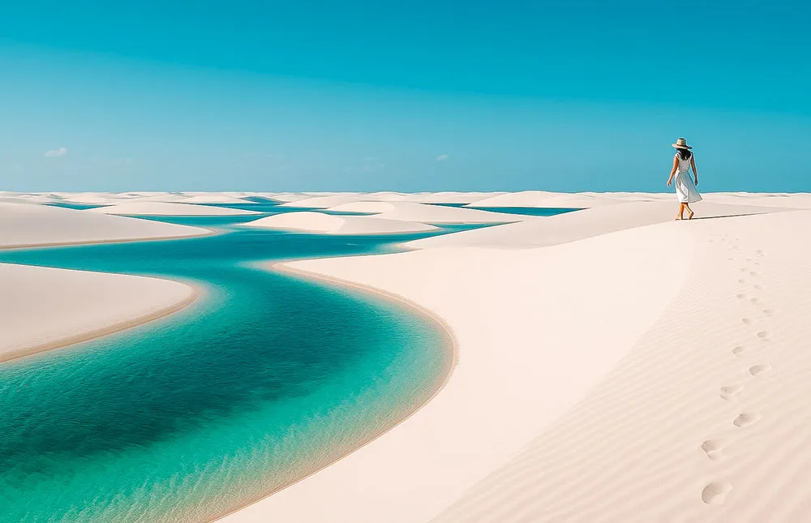

Lençóis Maranhenses (MA)
On Maranhão's coast, this national park protects 155,000 hectares of sweeping white sand dunes. From June to September, seasonal rains fill the valleys with thousands of crystal-clear freshwater lagoons, creating a surreal landscape. Local culture blends Indigenous and Quilombola traditions, highlighted by fresh seafood cuisine. Top activities include taking 4x4 tours from Barreirinhas or Atins to swim in Lagoa Azul and Lagoa Bonita, and watching the sunset over the dunes.